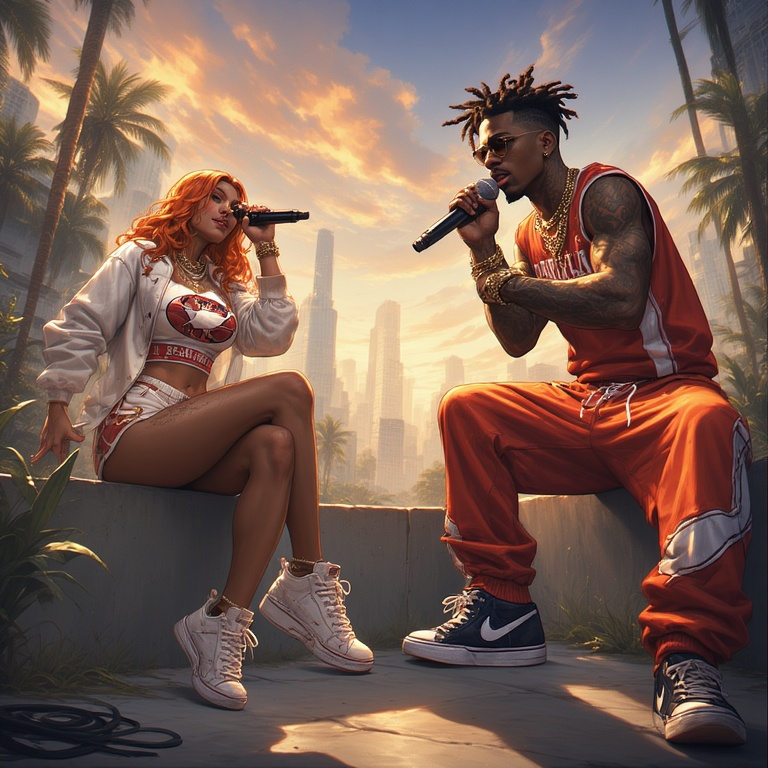

Lights come up, hearts start to race,
We’ve got fire running through this place.
Every heartbeat drums the same,
Chasing glory, shouting names!
(Pre-Chorus)
No fear, no fall,
We’re breaking through it all.
(Chorus)
Rise up tonight — feel the thunder roll,
Hands to the sky, never letting go.
We run, we fight, we shine like the sun,
Energy high — we’re the chosen ones! ⚡
(Verse 2)
Echoes bouncing off the stands,
Dreams built strong in calloused hands.
One voice, one team, one sound,
This is where our souls are found.
(Bridge)
Ohh, every scar tells a story,
Every loss builds the glory —
We’ll burn bright till the night is done,
Hearts united, beating as one!
(Final Chorus)
Rise up tonight — we’re alive, we run,
Chasing the stars till the morning comes.
No holding back, no giving in —
This is our time, let the fight begin! 🔥
(Chorus)
Ohhh, I’m flying high on AWS,
Where my dreams deploy, no need to stress.
From Lambda lights to Dynamo nights,
Scaling up my world, everything’s right!
(Verse 2)
CloudWatch eyes keeping logs in sight,
IAM rules keeping access tight.
VPC dreams, we’re subnet deep,
Auto-scaling armies never sleep!
(Bridge)
Got my CloudTrail runnin’, tracking the show,
Terraform builds wherever I go.
From Manchester skies to London rain,
The cloud’s my stage, I’m on the mainframe!
(Final Chorus)
Ohhh, I’m flying high on AWS,
Where uptime shines and I’m truly blessed.
From Lambda love to Route 53,
The cloud’s my jam — it’s home to me! ☁️
[Verse 1 – Him]
Yeah, city lights flicker on the Thames at night,
I’ve been grindin’ for the dream, tryna get it right.
Bus stop talks, cold air, mid-December,
Stackin’ wins now, I’ll make ‘em remember.
[Verse 2 – Her]
You chat about grind but I’ve lived that fight,
North side queen with my aim in sight.
No silver spoon, just tea and grit,
I turn pain into art, that’s my ultimate hit.
[Hook – Both]
We don’t sleep, nah, we move till dawn,
From the flats to the stage, new kings reborn.
Bassline bumpin’, hearts in sync,
One shot, no blink, yeah — we’re on the brink.
[Verse 3 – Him]
I came from the grey, made colour outta struggle,
Now I talk goals, no time for the subtle.
See her on the mic? Best mind your tone,
She’ll flip the script, then claim the throne.
[Verse 4 – Her]
Don’t gas me up, I’m the spark and flame,
Words cut deep like a London rain.
He’s the calm, I’m the storm — that’s the blend,
Two sides, one vibe, till the very end.
[Bridge – Both]
(He) Late nights, take flights, dream in motion,
(She) Big moves, real talk, pure devotion.
(He) No fear when the beat drops,
(She) We rise — no ceiling, no stops!
[Final Hook – Both]
We don’t sleep, nah, we move till dawn,
From the flats to the stage, new kings reborn.
Bassline bumpin’, hearts in sync,
One shot, no blink — what you think?
(Pre-Chorus)
No fear, no fall,
We’re breaking through it all.
(Chorus)
Rise up tonight — feel the thunder roll,
Hands to the sky, never letting go.
We run, we fight, we shine like the sun,
Energy high — we’re the chosen ones! ⚡
(Verse 2)
Echoes bouncing off the stands,
Dreams built strong in calloused hands.
One voice, one team, one sound,
This is where our souls are found.
(Bridge)
Ohh, every scar tells a story,
Every loss builds the glory —
We’ll burn bright till the night is done,
Hearts united, beating as one!
(Final Chorus)
Rise up tonight — we’re alive, we run,
Chasing the stars till the morning comes.
No holding back, no giving in —
This is our time, let the fight begin! 🔥

(Verse 1)
Yeah, they sell us dreams on the six o’clock news,
But behind those screens, they just bendin’ the truth.
Justice blindfolded, can’t see who’s who,
Rich man walks, poor man pays dues.
They tell us “trust the system,” but the system’s broke,
Paper laws burnin’ while the people choke.
Courts in chaos, verdicts bought and sold,
We scream for fairness, but the world stays cold.
(Chorus)
Where’s the truth when the liars run the show?
Who’s the voice when the honest got no home?
Media preach, but their morals gone ghost,
We just want fairness, yeah, that matters most.
(Verse 2)
Mentors lost, idols sold their soul,
Trading truth for clicks, that control the scroll.
Politicians posing with their “honour” badge,
While the youth out here tryna dodge the trap.
The mirror cracked — reflection distorted,
Facts twisted up, justice contorted.
Society’s blindfold slipping down slow,
We see the game now, we just want to know.
(Bridge)
Can’t build peace on a lie that’s disguised,
Can’t fix trust when the truth’s been denied.
If we all stand up, no divide, no side,
Maybe then justice could finally rise.
(Outro)
So here’s to the people, tired but aware,
Fighting for a system that’s honest and fair.
We don’t need kings, we don’t need crowns,
Just truth that stands when the lies fall down.
“Loop Loop” – Fun, Crazy Lyrics
Hook / Chorus (repeatable, catchy)
"Loop loop, spin around,
Jump up high, touch the clouds!
Loop loop, dance with me,
Crazy fun, wild and free!"
Verse 1
"I see a cat wearing a hat,
Riding a bike with a baseball bat!
Banana boats sail in the sky,
I wink at the moon as it waves goodbye!"
Pre-Chorus
"Zig zag, hop hop, tick-tock, pop!
Silly faces never stop,
Flip-flop, jump-jump, twirl-twirl, yay!
Every single day’s a play!"
Chorus / Hook
"Loop loop, spin around,
Jump up high, touch the clouds!
Loop loop, dance with me,
Crazy fun, wild and free!"
Verse 2
"My shoes are dancing without me,
My hair’s a rainbow in a tree!
Chocolate rivers, candy rain,
I laugh so hard I go insane!"
Bridge / Breakdown
"Loop-de-loop, twist and twirl,
Jump on the moon, give it a whirl!
Loop-de-loop, spin and slide,
Hold my hand, enjoy the ride!"
Final Chorus / Hook
"Loop loop, spin around,
Jump up high, touch the clouds!
Loop loop, dance with me,
Crazy fun, wild and free!
Loop loop, spin around,
Jump up high, touch the clouds!
Loop loop, dance with me,
Crazy fun, wild and free!"
English Opera – Concept & Sample Lyrics
Title: “Whispers of the Heart”
Act 1 – Soft, Tentative Opening (Recitative Style)
"I see you there… across the crowded hall,
A fleeting glance, a whisper in my soul.
Could this be love, or only a dream,
A spark that fades before it can be seen?"
Act 1 – Aria / Emotional Build
"Oh, heart, why do you leap so high,
When fear whispers, 'He does not care'?
Yet still, I dare to hope, to try,
To sing my longing in the open air."
Act 2 – Dramatic Conflict
"I hear his voice, yet is it mine to claim?
The world conspires with shadows, doubt, and blame.
But I will rise, my song a flame,
To pierce the night and call your name!"
Finale – Climactic, Soaring
"I reach for you! Though unknown your heart,
I sing this love, my soul laid bare!
And if my hope is all I own,
Then let my voice become a prayer!"
Title: “Sous la Pluie” (Under the Rain)
Verse 1 – Soft, Reflective
"Sous la pluie, je marche seul…
Le vent murmure ton nom…
Mes pensées s’envolent, mon cœur est lourd,
Je rêve encore de ton amour."
(Under the rain, I walk alone…
The wind whispers your name…
My thoughts fly away, my heart is heavy,
I still dream of your love.)
Chorus – Moody, Emotional
"Oh, je t’attend, mais tu n’es pas là…
Mon âme pleure, je me perds dans le noir.
Sous la pluie, ton visage revient…
Et je chante encore, je t’aime toujours."
(Oh, I wait for you, but you are not here…
My soul cries, I get lost in the dark.
Under the rain, your face returns…
And I still sing, I love you always.)
Verse 2 – Deep Reflection
"Les souvenirs me suivent partout,
Chaque note de violon me touche…
Le temps s’arrête, la nuit m’enlace,
Je cherche encore ta douce trace."
(Memories follow me everywhere,
Every note of the violin touches me…
Time stops, the night embraces me,
I still look for your gentle trace.)
Bridge – Instrumental / Violin Focus
Let the violin carry the melody here, slow and expressive, with vibrato and slight dissonance to heighten moodiness.
Final Chorus – Emotion Peaks
"Oh, je t’attend, mais tu n’es pas là…
Sous la pluie, je chante pour toi…
Mon cœur bat encore pour ton amour,
Je rêve de toi, je t’aimerai toujours."
(Oh, I wait for you, but you are not here…
Under the rain, I sing for you…
My heart still beats for your love,
I dream of you, I will always love you.)
Rubber Ducky Disco"
(bouncy, bubbly, pure Saturday-morning madness)
[Verse 1]
I woke up in a bathtub wearing neon roller skates
My rubber ducky told me, “Girl, you’re runnin’ late!”
The disco ball was spinning and the shampoo sang a riff
The loofah did a cartwheel, nearly fell right off the cliff
[Pre-Chorus]
So I jumped out with a towel cape,
Ready for my funky fate
Ducky grabbed the mic and said:
“Hit it, queen—activate!”
[Chorus]
✨ Quack-quack! Boom-boom!
Welcome to the Rubber Ducky Disco room
Where the bubbles pop and the floor goes zoom
And the bath toys dance like they’ve had perfume
✨ Flip-flap! Tick-tock!
Weird little beat that’ll never stop
Shake your feathers, spin that mop
Rubber Ducky Disco—quack until you drop!
[Verse 2]
The frog was DJ’ing with a glowstick in his hand
The sponge was doing breakdance on a tiny rubber band
The shower curtain shimmered like a superstar in space
And the toothbrush did the moonwalk with toothpaste on its face
[Pre-Chorus]
So I joined the chaos, hair a mess
Ducky said, “You’re fabulous!”
Then the shampoo sprites appeared
And started chanting, “YAS!”
[Chorus]
✨ Quack-quack! Boom-boom!
Welcome to the Rubber Ducky Disco room
Where the bubbles pop and the floor goes zoom
And the bath toys dance like they’ve had perfume
✨ Flip-flap! Tick-tock!
Weird little beat that’ll never stop
Shake your feathers, spin that mop
Rubber Ducky Disco—quack until you drop!
[Bridge]
Gimme a wiggle, wiggle
Gimme a squeak, squeak
Rubber ducky rhythm
Going freaky every week
Jump left! Splash right!
Glow-in-the-dark shampoo fight!
If you’re not soaked, you’re not doing it right—
Let’s dive back in tonight!
[Final Chorus]
✨ Quack-quack! Boom-boom!
Welcome to the Rubber Ducky Disco room
Bubblegum beats and cartoon plume
Everybody wiggle like a bathroom broom
✨ Flip-flap! Tick-tock!
Ducky’s the star and the rest just flock
Silly little bop that’ll never stop
Rubber Ducky Disco—
QUACK IT LIKE IT’S HOT!